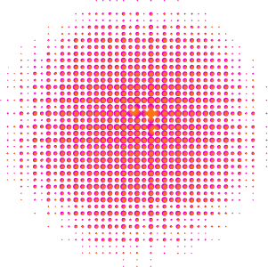

Velkommen til min portfolio
Jeg er Cecilie Kruse Fyhn Knudsen og studerer lige nu til multimediedesigner på UCL i Odense.
Jeg er helt tosset med at være kreativ, og brænder både for grafisk design og web development.
Jeg er klar til at hjælpe dig med stort eller småt
Find mere information om mig herunder.
Om mig

Mine kompetencer
Jeg har forskellige kompetencer at byde på.
Jeg kan de forskellige programmer, som er i adobe-pakken, hvilket blandt andet er Illustrator, Photoshop og XD.
Jeg kan også finde ud af at bruge HTML og CSS.
I kan herunder se nogle af de ting jeg har lavet
Se portfolioSynes du det hele lyder lidt for godt til at være sandt?
Så skynd dig at kontakte mig her.